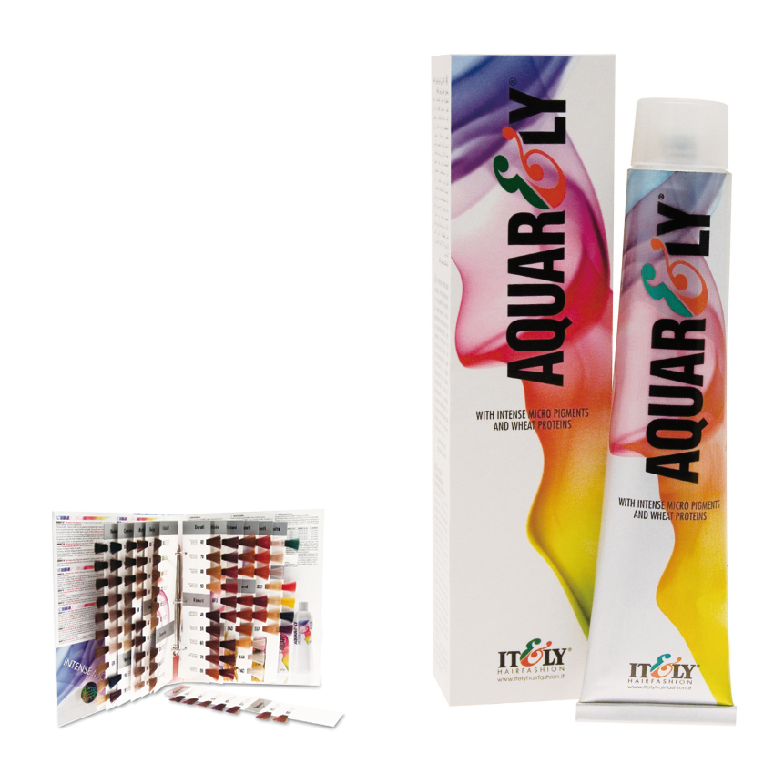

 |
AQUARELY IMP (Intense Micro Pigments)Em a coloração aquarely (97 tons) encontramos a síntesis entre a natureza e a investigação científica: Os micropigmentos e as proteínas de grão Graças às suas menores dimensões, os IMP conseguem penetrar melhor na cutícula do cabelo resultando numa cor mais uniforme, brilhante e duradoura. Outra vantagem importante do uso desta inovadora tecnologia é a redução do conteúdo de amoníaco no tubo, o que faz com que seja menos agressivo para o cabelo. As Proteínas de Trigo proporcionam uma acção condicionante e reestruturante, protegendo assim o couro cabeludo e a fibra capilar, deixando o cabelo mais suave e sedoso. Tubo de 100 ml. Relação 1:1,5. Superaclarantes 1:2 |